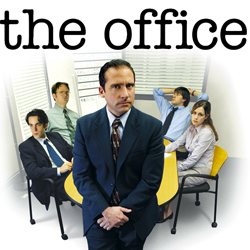

| Home | The Seasons | The Characters | The Reviews |
The Office |
The first season of the American television comedy The Office premiered in the United States on NBC on March 24, 2005, concluded on April 26, 2005, and consists of six episodes. The Office is an American adaptation of the British TV series of the same name, and is presented in a mockumentary format, portraying the daily lives of office employees in the Scranton, Pennsylvania branch of the fictitious Dunder Mifflin Paper Company.
This season introduced the main characters, and established the general plot, which revolves around Michael Scott (Steve Carell), regional manager of the Scranton branch office, trying to convince the filmmakers of the documentary that he presides over a happy, well-running office. Meanwhile, sales rep Jim Halpert (John Krasinski) finds methods to undermine his cube-mate, Dwight Schrute (Rainn Wilson); receptionist Pam Beesly (Jenna Fischer) tries to deal with Michael's insensitivities and flubs; and temporary employee Ryan Howard (B. J. Novak) is acting mostly as an observer of the insanity around him.
Season one of The Office aired on Tuesdays in the United States at 9:30 p.m. The season debuted to high numbers, and garnered moderately positive reviews from critics aside from a poorly received pilot episode. While some enjoyed the pilot, others opined that it was a mere copy of the original British version. Universal Studios Home Entertainment released season one in a single DVD on August 16, 2005. The DVD contained all six episodes, as well as commentaries from creators, writers, actors, and directors on most of the episodes, as well as deleted scenes from all of the episodes.